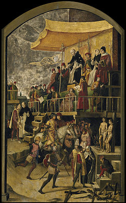
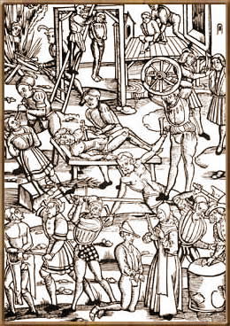
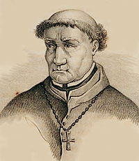

Святая инквизиция -общее название ряда учреждений Римско-католической церкви,предназначенных для борьбы с ересью.
История создания - Раннее христианство и христианская церковь страдали как от внешнего врага — римских императоров, так и от внутренних раздоров, опиравшихся на теологические разногласия: различные толкования священных текстов, на признании или непризнании отдельных текстов священными и так далее. Отражением одной из стадий внутренней борьбы был, видимо, «Иерусалимский собор», упоминаемый в главе 15 Деяний святых апостолов, а также множество случаев, когда апостол Павел защищал собственное апостольское служение, убеждал христиан опасаться ложных пастырей или чего-либо противоречащего тому, что проповедовал он. Аналогичные призывы содержатся в посланиях Иоанна и в Послании к Евреям, а также в Откровении Иоанна Богослова. Начиная со II века, христианские авторитеты (епископы и местные синоды), пользуясь вышеприведёнными источниками, обличали некоторых богословов как еретиков и определяли доктрину христианства более ясно, стараясь избежать ошибок и разночтений. В связи с этим ортодоксальности стали противопоставлять ересь. Особый церковный суд католической церкви под названием «Инквизиция» был создан в 1215 году папой Иннокентием III. Церковный трибунал, которому было поручено «обнаружение, наказание и предотвращение ересей», был учреждён в Южной Франции Григорием IX в 1229 году. Этот институт достиг своего апогея в 1478 году, когда король Фердинанд и королева Изабелла с санкции Папы Сикста IV учредили испанскую инквизицию. Конгрегация священной канцелярии была учреждена в 1542 году, заменив собой «Великую римскую инквизицию», а в 1917 году ей были переданы также функции упразднённой конгрегации индекса. В 1908 году переименована в «Конгрегацию доктрины веры» (лат. Sacra congregatio Romanae et universalis Inquisitionis seu Sancti Officii). Работа этого учреждения строилась в строгом соответствии с действующим тогда в католических странах законодательством.

Цели и средства - Основной задачей инквизиции являлось определение, является ли обвиняемый виновным в ереси.
С конца XV века, когда в Европе начинают распространяться представления о массовом присутствии заключивших договор с нечистой силой ведьм среди обычного населения, в её компетенцию начинают входить процессы о ведьмах. В то же время подавляющее число приговоров о ведьмах вынесли светские суды католических и протестантских стран в XVI и XVII веках. Хотя инквизиция действительно преследовала ведьм, точно так же поступало и практически любое светское правительство. К концу XVI века римские инквизиторы начали выражать серьёзные сомнения в большинстве случаев обвинения в ведовстве. Также в компетенцию инквизиции с 1451 года Папа Николай V передал дела о еврейских погромах. Инквизиция должна была не только наказывать погромщиков, но и действовать превентивно, предупреждая насилие.
Юристы католической церкви огромное значение придавали чистосердечному признанию. Кроме обычных допросов, применялась, как и в светских судах того времени, пытка подозреваемого. В том случае, если подозреваемый не умирал в ходе следствия, а признавался в содеянном и раскаивался, то материалы дела передавались в суд. Внесудебных расправ инквизиция не допускала.

Пытки, применяемые к обвиняемым в ереси. Гравюра 1508 года.
Хронологически историю инквизиции можно разделить на три этапа:
1. додоминиканский (преследования еретиков до XII века);
2. доминиканский (со времени Тулузского собора 1229 г.);
3. испанская инквизиция.
Додоминиканский(Преследования еретиков до XII века) Зародыши Инквизиции можно найти ещё в первые века христианства — в обязанности диаконов разыскивать и исправлять заблуждения в вере, в судебной власти епископов над еретиками. Суд епископский был прост и не отличался жестокостью; самым сильным наказанием в то время было отлучение от церкви. Со времени признания христианства государственной религией Римской империи, к церковным наказаниям присоединились и гражданские. В 316 году Константин Великий издал эдикт, присуждавший донатистов к конфискации имущества. Угроза смертной казнью впервые была произнесена Феодосием Великим в 382 году по отношению к манихеям, а в 385 г. была приведена в исполнение над присциллианами. В капитуляриях Карла Великого встречаются предписания, обязывающие епископов следить за нравами и правильным исповеданием веры в их епархиях, а на саксонских границах — искоренять языческие обычаи. В 844 году Карл Лысый предписал епископам утверждать народ в вере посредством проповедей, расследовать и исправлять его заблуждения («ut populi errata inquirant et corrigant»). В IX и X вв. епископы достигают высокой степени могущества; в XI век, во время преследования патаренов в Италии, их деятельность отличается большой энергией. Уже в эту эпоху церковь охотнее обращается к насильственным мерам против еретиков, чем к средствам увещания. Наиболее строгими наказаниями еретиков уже в ту пору были конфискация имущества и сожжение на костре. Так Анна Комнина описывает в «Алексиаде» сожжение на костре богомила Василия в 1118 году, говоря про императора, что тот принял решение «новое, необычное по своему характеру, неслыханное по своей смелости».
Доминиканский Установленные в 1233 году инквизиционные суды вызвали в 1234 году народное восстание в Нарбонне, а в 1242 году — в Авиньоне. Несмотря на это, они продолжали действовать в Провансе и распространены были даже и на северную Францию. По настоянию Людовика IX, папа Александр IV назначил в 1255 году в Париже одного доминиканского и одного францисканского монахов на должность генеральных инквизиторов Франции. Ультрамонтанское вмешательство в дела галликанской церкви встречало, однако, беспрестанное противодействие со стороны её представителей; начиная с XIV века, французская инквизиция подвергается ограничениям со стороны государственной власти и постепенно приходит в упадок, которого не могли удержать даже усилия королей XVI века, боровшихся против реформации. Тем же Григорием IX инквизиция введена была в Каталонии, в Ломбардии и в Германии, причем повсюду инквизиторами назначались доминиканцы. Из Каталонии инквизиция быстро распространилась по всему Пиренейскому полуострову, из Ломбардии — в различных частях Италии, не везде, впрочем, отличаясь одинаковою силой и характером. Так, например, в Неаполе она никогда не пользовалась большим значением, вследствие беспрестанных раздоров между неаполитанскими государями и римской курией. В Венеции инквизиция (совет десяти) возникла в XIV век для розыска соучастников заговора Тьеполо и являлась политическим трибуналом. Наибольшего развития и силы инквизиция достигла в Риме. О степени влияния инквизиции в Италии и о впечатлении, произведенном ею на умы, свидетельствует сохранившаяся во флорентийской церкви Santa Maria Novella знаменитая фреска Симона Мемми, под названием «Domini canes» — «Божьи псы», (каламбур, основанный на созвучии этих слов со словом dominicani — доминиканцы), изображающая черно-белых собак, отгоняющих волков от стада. Наибольшего развития итальянская инквизиция достигает в XVI век, при папах Пии V и Сиксте V. В Германии инквизиция первоначально направлена была против племени стедингов, отстаивавших свою независимость от бременского архиепископа, Здесь она встретила всеобщий протест. Первым инквизитором Германии был Конрад Марбургский; в 1233 году он был убит во время народного восстания, а в следующем году той же участи подверглись и два главные его помощника. По этому поводу в Вормской летописи говорится: «таким образом, при Божьей помощи, Германия освободилась от гнусного и неслыханного суда». Позже папа Урбан V, опираясь на поддержку императора Карла IV, снова назначил в Германию двух доминиканцев, в качестве инквизиторов; однако, и после этого инквизиция не получила здесь развития. Последние следы её были уничтожены реформацией. Инквизиция проникла даже в Англию, для борьбы против учения Уиклифа и его последователей; но здесь значение её было ничтожно. Из славянских государств только в Польше существовала инквизиция, и то очень недолго. Вообще, учреждение это пустило более или менее глубокие корни только в Испании, Португалии и Италии, где католицизм оказывал глубокое влияние на умы и характер населения.
Испанская инквизиция , возникшая в XIII веке, как отголосок современных событий в южной Франции, возрождается с новой силой в конце XV века, получает новую организацию и приобретает огромное политическое значение. Испания представляла наиболее благоприятные условия для развития инквизиции. Многовековая борьба с маврами способствовала развитию в народе религиозного фанатизма, которым с успехом воспользовались водворившиеся здесь доминиканцы. Нехристиан, именно евреев и мавров, было много в местностях, отвоеванных от мавров христианскими королями Пиренейского полуострова. Мавры и усвоившие их образованность евреи являлись наиболее просвещенными, производительными и зажиточными элементами населения. Богатство их внушало зависть народу и представляло соблазн для правительства. Уже в конце XIV века масса евреев и мавров силою вынуждены были принять христианство (см. Марраны и Мориски), но многие и после того продолжали тайно исповедовать религию отцов.

Томмазо Торквемада, основатель испанской инквизиции
В 1184 году папа Луций III и император Фридрих I Барбаросса установили строгий порядок розыска епископами еретиков, расследования их дел епископскими судами; светские же власти обязывались приводить в исполнение выносимые ими смертные приговоры.
В 1215 году впервые об Инквизиции как об учреждении говорилось на созванном папой Иннокентием III 4-м Латеранском соборе, установившем особый процесс для преследования еретиков (лат. per inquisitionem), достаточным основанием для которого объявлялись порочащие слухи.
В период с 1231 по 1235 год папа Григорий передал функции по преследованию ересей, ранее исполнявшиеся епископами, специальным уполномоченным — инквизиторам (первоначально назначавшимся из числа доминиканцев, а затем и францисканцев).
В 1481 году вступил в должность первый Великий Инквизитор Испании Томас Торквемада.
В 1498 году умер Торквемада. В его правление, по оценке Х. А. Льоренте (том II, глава XLVI), «инквизиция… умертвила 8800 человек живьём в пламени костров».
В 1542 году папа римский Павел III учредил Священную Римскую и Вселенскую Инквизицию.
В 1587 году, с реформой папы Сикста V, была учреждена Верховная Священная Конгрегация Римской и Вселенской Инквизиции. В таком неизменном виде она просуществовала до 1908 года.
В 1633 в Риме Галилео Галилей отрёкся от учения Коперника.
1820 год — упразднение инквизиции в Португалии.
1834 год — упразднение инквизиции в Испании.
В 1908 году папа Пий Х переименовал это ведомство в Священную Конгрегацию Священной Канцелярии. Священная Канцелярия просуществовала до 1967 года, когда папа Павел VI переименовал Священную Канцелярию в Священную конгрегацию доктрины веры, существующую и поныне.
В 1992 Папа Иоанн Павел II реабилитировал Галилея и официально признал, что инквизиция совершила ошибку, силой вынудив учёного отречься от теории Коперника.